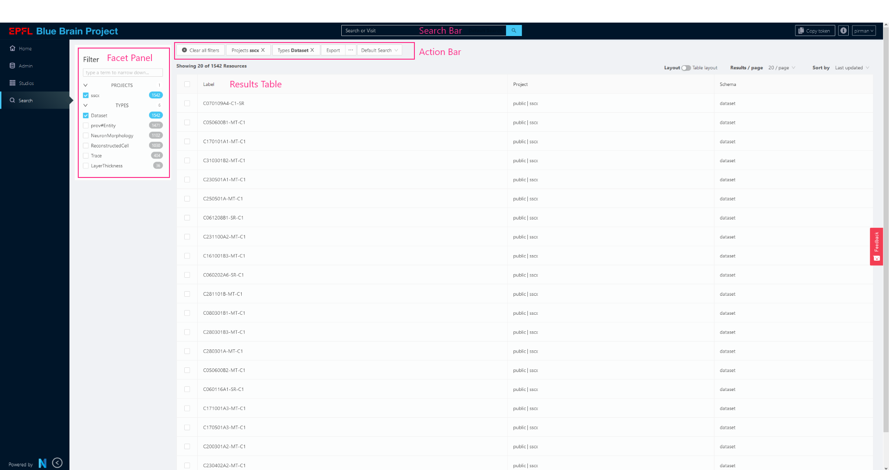
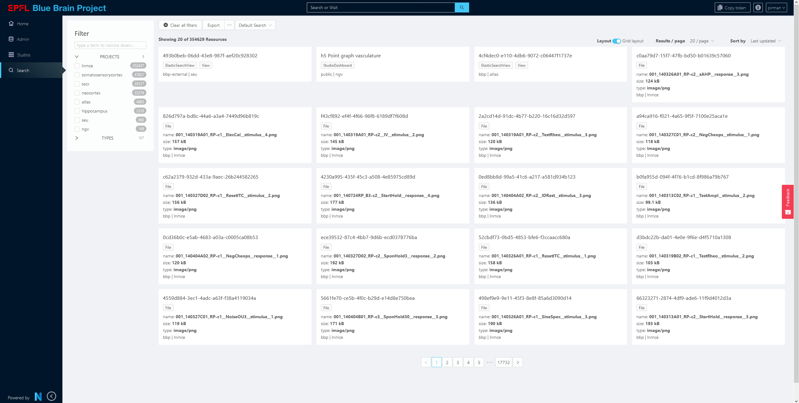
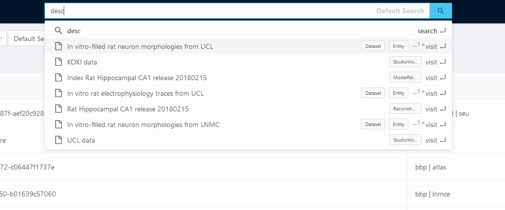

Search
The Search SubApp enables users to search or filter data stored in Nexus Delta in various projects in a configurable way. It’s intended as a global search tool for your Nexus instance.

The administrator who configures one or more SearchConfigs for their Search SubApp has power over what data is searchable, and how it will render in the Search interface.
Powered by Elastic Search Views
This feature leverages the Elastic Search indexing capability of Nexus Delta. It uses the SearchConfig to decide how to query an Elastic Search View. Because it depends on the Elastic Search View feature, make sure that your mappings property is properly configured to index the data in the way you expect. An incorrectly configured mapping property might not show the appropriate Facets you might expect, or it could simply result in nothing shown.
We recommend using an Aggregate Search View, so that you can query multiple projects at once. However, this feature is limited to 10 to 15 projects, depending on their index name length.
Search Config
Where are SearchConfigs stored?
Search configs are saved in a project as a simple Resource, with a type nxv:SearchConfig.
Nexus Fusion must be made aware of which project to look for these resources, either by using the env var SEARCH_CONFIG_PROJECT
SEARCH_CONFIG_PROJECT=my-org/my-project
or Nexus Fusion will use the default SEARCH_CONFIG_PROJECT value, webapps/nexus-web
Signature:
{
// A unique ID
id: string;
// A label to show in the interface to users
label: string;
// Which view will be used to query against? can be of type AggregatedElasticSearchView or ElasticSearchView
view: string;
// An optional description
description?: string;
// An array of facet configurations that will drive the facet panel
facets?: FacetConfig[];
// An array of Result Table Fields configurations that will dictate the Result Table rendering
fields?: ResultTableFields[];
};
Example SearchConfig
{
"@type": [
"nxv:SearchConfig"
],
"description": "global dataset search",
"facets": [
{
"key": "brainLocationLabel",
"label": "Brain Region",
"propertyKey": "brainLocation.brainRegion.label.raw",
"type": "terms"
},
{
"key": "objectOfStudyLabel",
"label": "Object of Study",
"propertyKey": "objectOfStudy.label.raw",
"type": "terms"
},
{
"key": "type",
"label": "Type",
"propertyKey": "@type",
"type": "terms"
}
],
"fields": [
{
"dataIndex": "label",
"displayIndex": 0,
"key": "label",
"title": "Label"
},
{
"dataIndex": "@type",
"displayIndex": 3,
"key": "@type",
"sortable": true,
"title": "Type"
},
{
"dataIndex": "objectOfStudy.label",
"displayIndex": 2,
"key": "objectOfStudyLabel",
"title": "Object of Study"
},
{
"dataIndex": "brainLocation.brainRegion.label",
"displayIndex": 1,
"key": "brain-region",
"title": "Brain Region"
}
],
"label": "MINDS",
"view": "https://my-nexus-deployment.com/v1/views/webapps/nexus-web/my-view-id"
}
Facets
The Facet portion of the config dictates what will render in the left column of the Search interface that allows users to toggle facets or filters to narrow down their search. Each facet category is generated using an Elastic Search Aggregated query, and so far only supports term aggregated queries, but may be expanded in the future to allow filtering search against things like dates.
Because of the terms limitation, it’s only possible to create facets with the Elastic Search Mapping type of object or text and keyword
Signature:
{
// The full path to target property, according to the elastic search mapping
propertyKey: string;
// A unique key to distinguish against other Facet objects
key: string;
// The label to be used in the interface
label: string;
// The only available facet type
type: "terms";
// An optional value to sort the facets in the interface. A lower displayIndex value will render this option higher in the interface
// Note, if this value is blank, the label will be used to sort alphabetically to be consistent.
displayIndex?: number;
}[]
Defaults
The Facet configs are an optional field. The default will allow users to filter by project and @type.
{
propertyKey: '_project',
key: 'projects',
label: 'Projects',
type: 'terms',
displayIndex: 0,
},
{
propertyKey: '@type',
key: 'types',
label: 'Types',
type: 'terms',
displayIndex: 1,
}
Fields
The Fields property of the Search Config allows users to specify what properties to show in the Result Table. They correspond to table columns.
Signature:
{
// The table column header title
title: string;
// The property to access, in dot notation (eg: "brainLocation.brainRegion.label" )
dataIndex: string;
// Optionally make the field sortable
sortable?: boolean;
// A unique key to identify this column
key: string;
// Lower numbers will appear to the left of the table. If no displayIndex is given, it will sort alphabetically by the "key" property
displayIndex: number;
}[]
Special properties
The table will render the value found via the dataIndex property as simple text. However, there are some special rendering logic for the following keys, which will ignore the dataIndex property of the config.
- project: Will render the org and project info
- @type: Will render a list of @types as pills
- schema: Will render the schema (
_constrainedBy) field with a tooltip - label: Will render a human-readable label using the following:
resource.prefLabel || resource.label || resource.name || resource["@id"] - description: Will render a description using the enriched markdown template viewer (see Description Viewer)
Defaults
IF no fields property exists on the SearchConfig, the following default values will be used:
{
title: 'Label',
dataIndex: 'label',
key: 'label',
displayIndex: 0,
},
{
title: 'Project',
dataIndex: '_project',
sortable: true,
key: 'project',
displayIndex: 1,
},
{
title: 'Types',
dataIndex: '@type',
sortable: true,
key: '@type',
displayIndex: 3,
},
Search Results
The Search Results body displays the resources that match the search / filtering criteria in two ways: a Results Grid or a Results Table
Result Grid
The Result Grid displays matched Resources in preview cards, to show off visual content of Data stored in Nexus Delta. These preview cards can be used to show snippets of code or preview images, for example.

Result View Cards
Each result card is rendered using an expanded version of the markdown + handlebars rendering used elsewhere in Nexus Fusion, but with some expanded functionality.
The Search SubApp will attempt to render a card using a markdown + handlebar template string found in the previewTemplate property of that Resource. If no previewTemplate property is found, it will render using the default template string:
<div style="display: block">
<h3 class="title">{{ resourceLabel }}</h3>
{{#if description}}
<div class="description">
<div class="overlay"></div>
{{{ description }}}
</div>
{{/if}}
<div style="display:flex;" class="types">
{{#each type}}
<li>
<span class="ant-tag">{{this}}</span>
</li>
{{/each}}
</div>
{{#if fileData }}
<div class="file-data">
<span>name: <b>{{ _filename }}</b></span><br/>
<span>size: <b>{{ fileData.humanReadableFileSize }}</b></span><br/>
<span>type: <b>{{ _mediaType }}</b></span><br/>
</div>
{{/if}}
<div>
<span>{{ resourceAdminData.org }}</span> | <span>{{ resourceAdminData.project }}</span></div>
</div>
As you can see above, instead of just passing the Resource object to the template, the template has access to a few more properties:
// Properties offered in the Preview Template
{
...resource,
// a human-readable label created from these values:
// resource.prefLabel ||
// resource.label ||
// resource.name ||
// resource["@id"]
resourceLabel: string,
// Useful metadat about the resource
resourceAdminData: {
url: string,
deployment: string,
apiVersion: string,
entityType: string, // Corresponds to Schema
org: string,
project: string,
id: string,
},
// if the resource is a file, a human-readable label
// will show off the size of the file.
fileData: {
humanReadableFileSize: string
} | null
}
Result Table
The Result Table shows off data in a table, where each row corresponds to a Resource that matched the search and query criteria. The columns are defined by the SearchConfig.
Search Bar
The Search Bar enables users to use full text search across their configured view, as well as navigate to matching Resources.

Caveats
Full text search is powered using the Elastic Search Mapping property called __original_source, and must be add to your view’s mapping to be useful, otherwise no results will show. The proper mapping is as follows:
{
...rest of mapping,
"_all_fields": {
"analyzer": "nexus",
"type": "text"
},
"_original_source": {
"analyzer": "nexus",
"copy_to": "_all_fields",
"type": "text"
},
}
This uses a specially developed analyzer, and also requires the __all_fields property to exist. Simply copying these two properties should be sufficient.
Action Bar
The action bar allows users to deselect filters, toggle between SearchConfigs, and export their search resuts.
Exporting
CSV
This option will generate a CSV, whose columns are configured from the fields property of the SearchConfig
As ES Query
This option will copy the Elastic Search query used to generate the results, excluding the pagination properties from and size. You can then use this query that is in your clipboard to create an Elastic Search Studio, or query for yourself in the Query Elastic Search View of a project in the Admin SubApp.